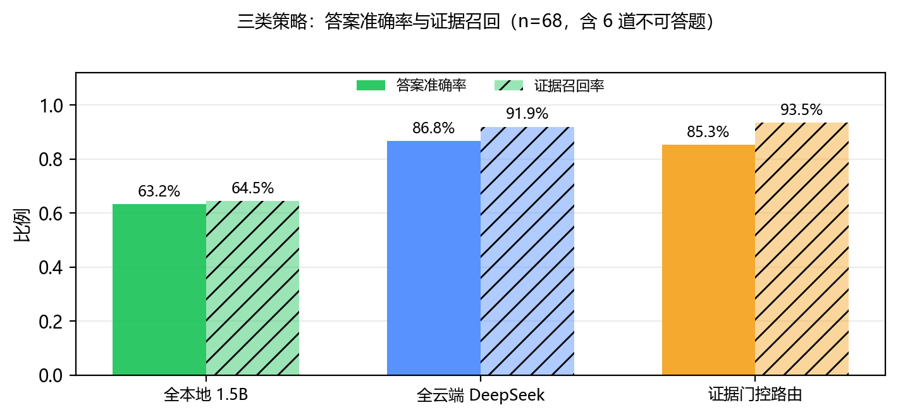
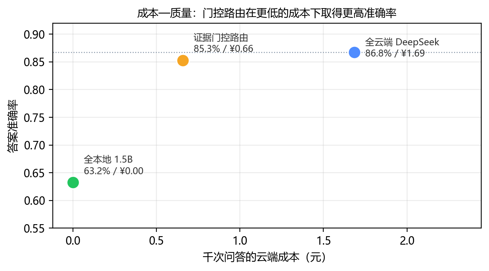
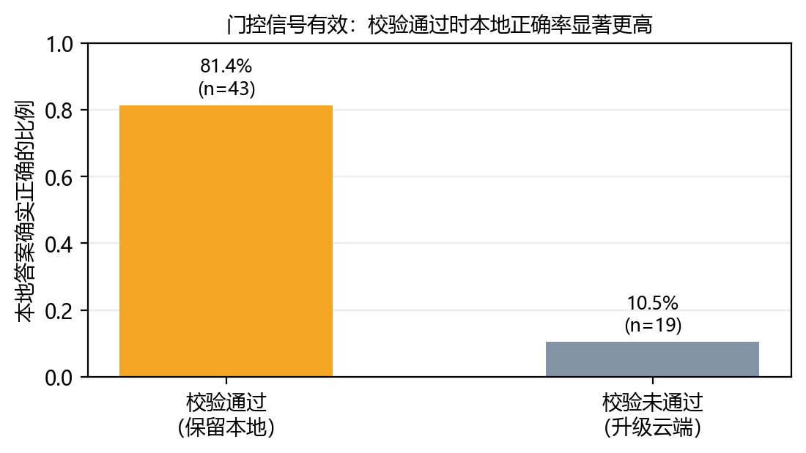

2026 第九届传智杯全国大学生数智创新与 AI 应用大赛
HybridMind
论文精读问答与证据锚点：
摘 要
读一篇英文论文时，最耗时的不是通读，而是回答一个具体问题：这篇在哪个数据集上评的？报告的那个指标是多少？作者为什么这样设计？把论文丢给通用大模型能立刻得到答案，但答案往往说得通顺而无法核对——论文场景里，一个被张冠李戴的小数点，代价比一句"我不知道"大得多。
本文提出 HybridMind ：一个面向论文精读的中文问答系统。它把 PDF 解析成带页码与坐标的片段，用纯 CPU 的 BM25 加一层离线双语索引 解决"中文提问、英文原文"的词面失配，再让本地 1.5B 与云端大模型按需分流；回答被要求标注出处，并额外经过一层确定性对齐 ——用数字、英文术语与译文重合度，把答案句钉回原文的具体行，前端据此在页面上画出高亮框。对齐结果同时充当校验门控 ：锚点站得住就保留本地答案，站不住就升级云端重答。
在 3 篇公开论文、115 道中文题 （44 道数字定位、57 道事实抽取、14 道不可答）上：全本地准确率 73.0% 、证据召回 69.3%，全云端 89.6% 、91.1%，而门控路由达到 87.8% 、90.1%，同时只用掉 32.2% 的云端调用（千次问答 ¥1.66 → ¥0.51，降 69%），误拒率从 17.8% 降到 4.0%。也就是说，它用不到三分之一的云端调用，保住了全云端 98% 的准确率，并把误拒率降了一半、锚定率提到最高 。
本文还报告一个否定性结果：把"预测本地会不会答错"的学习型路由器原样搬到论文场景，5 折交叉验证 AUC 只有 0.66 ，阈值化后 89% 的请求都要上云，路由等于失效。原因不是实现错误，而是这个场景里小模型的错误形态变了——它不缺"能不能读懂"的先验，缺的是"在上下文里挑对了哪个数"的运气。这促使我们把路由信号从预测难度 换成验证证据 ：前者需要猜，后者可以算。
系统以 Python 实现，本地推理走 Ollama（Qwen2.5-1.5B，Q4），云端走任意 OpenAI 兼容接口，前端零依赖。全部实验基于封闭答案与确定性判分，不使用大模型当裁判，任何人可用仓库脚本逐条复算。
关键词： 检索增强生成；证据锚点；可验证性；端云协同；模型路由；论文阅读
目 录
1 问题与动机 5
1.1 读不完的论文与不可验证的回答 5
1.2 长上下文不是解法 5
1.3 本文要回答的三个问题 5
1.4 主要贡献 6
2 相关工作 7
2.1 检索增强生成 7
2.2 引用生成与归因 7
2.3 幻觉检测与可验证性 7
2.4 模型路由与级联 7
2.5 与本文的差异 8
3 系统设计 9
3.1 总体架构 9
3.2 解析层：页码与坐标 9
3.3 检索层：BM25 与离线双语索引 10
3.4 推理后端抽象与降级 10
3.5 可观测性与成本账本 10
3.6 交互与可视化 10
4 证据锚点与门控路由 12
4.1 问题形式化 12
4.2 受约束生成 12
4.3 确定性对齐 12
4.4 一致性校验 13
4.5 校验门控路由 13
5 实验设置 14
5.1 语料与评测集 14
5.2 判分口径 14
5.3 对照与指标 15
5.4 硬件与超参 15
6 结果与分析 16
6.1 检索质量 16
6.2 三类策略基线 16
6.3 门控路由的效果 17
6.4 消融：学习型路由为何失效 19
6.5 失败分析 19
6.6 与算术实验的对照 19
7 讨论 21
7.1 为什么证据锚点比长上下文划算 21
7.2 门控信号为什么有效 21
7.3 局限性 21
7.4 改进方向 21
8 工程实现与复现 23
8.1 代码结构 23
8.2 部署 23
8.3 复现步骤 24
8.4 开发过程留痕 24
参考文献 9
1 问题与动机
1.1 读不完的论文与不可验证的回答
本科高年级与研究生阶段的第一道坎，往往不是写不出论文，而是读不动论文。一篇 20 页的英文论文里，真正有用的信息高度集中在少数几处：数据集规模、关键指标、与基线的差值、方法上的那个关键选择。读者真正想问的，几乎都是"这个数是多少""这里到底怎么做的"这类具体问题，而不是"这篇讲了什么"。
通用大模型能秒答这些问题，并且答得很像那么回事。问题在于，论文场景对"像"的容忍度极低 ：把 44.1 记成 41.4、把 BART 记成 T5、把测试集数字说成验证集数字，读者若没有对照原文，几乎无法察觉；而一旦拿去写综述或做实验对比，错误就被放大了。我们访谈到的真实用法是：先问 AI，再翻原文核对 ——如果每次都要核对，AI 节省的时间又还回去了一半。
因此本作品的目标不是"答得更像人"，而是答完之后能立刻核对 ：每一个结论后面挂一个锚点，点一下就跳到原文那一页、高亮那一行。可核对，是论文问答区别于闲聊问答的核心需求。
1.2 长上下文不是解法
很自然的想法是：既然模型支持 128K 上下文，把整篇论文塞进去不就行了？这条路在实践中遇到三个问题。
第一是成本与延迟按页数线性增长 。一篇 20 页论文约 1.5 万 token，按本文使用的云端价格（输入 ¥2/百万 token）每次提问约 ¥0.03；而本系统的检索式方案每次只送 5 个片段（约 800 token），单次成本约 ¥0.0019，差一个数量级。第二是长上下文并不等于读得准 ：Liu 等人的实验表明，当关键信息位于输入中部时，模型的表现显著低于信息在开头或结尾的情形[5] ，把论文整篇塞进去恰好把关键段落放在了最不利的位置。第三是它仍然给不出可核对的位置 ——模型知道答案，但说不清在第几页第几行。
检索 + 锚点 vs 长上下文。 本作品选择"先检索、再生成、再对齐"，不是为了省钱，而是因为只有检索结果才带有页码与坐标 ——这是能够高亮原文的前提。长上下文方案里，模型看到的是一整片文本，没有可回指的片段编号。
1.3 本文要回答的三个问题
围绕"可核对的论文问答"，本文要回答三个可测量的问题：
Q1（能不能找到） ：中文提问、英文原文的条件下，纯词面检索能否把正确段落排进前 5？——这决定了后面所有环节的上限。
Q2（能不能钉住） ：答案能否被自动映射回原文的具体句子，并且映射结果可校验（引用的编号真实存在、数字与术语能在原文中找到）？——这是"可核对"的技术定义。
Q3（能不能少花钱） ：在保住证据质量的前提下，能否把相当比例的请求留在本地小模型上？——这是端云协同在这个场景里的真实价值。
1.4 主要贡献
本文的贡献可归纳为四条，每条都对应后文的实验或实现：
（1）一个可核对的中文论文问答系统 ：解析—检索—路由—锚点四层，答案可点击回指原文并高亮到行（第 3、4 节）。
（2）离线双语索引 ：建库期一次性把每块译文写进索引，运行期中文问句即可命中英文段落，不产生额外的云端调用（3.3 节、6.1 节）。
（3）确定性锚点对齐 ：不依赖模型守规矩地标注出处，用数字、英文术语、译文重合度三类与语言无关的信号做兜底对齐，并给出三条可自动统计的一致性校验（4.3、4.4 节、6.3 节）。
（4）证据门控路由 ：把路由信号从"预测本地会不会答错"换成"验证答案有没有原文背书"，在 115 题上以 32.2% 的云端占比取得 87.8% 的准确率与 90.1% 的证据召回（4.5 节、6.3 节）；同时报告了学习型路由在该场景下失效的否定性结果（6.4 节）。
2 相关工作
2.1 检索增强生成
RAG 把参数化记忆与非参数化的外部索引结合起来：检索器从文档库取回若干段落，生成器在这些段落的条件下产出答案[1] 。DPR 用双塔编码器把问题与段落映射到同一向量空间，使端到端训练检索器成为可能[2] ；REALM 则把检索器的训练提前到预训练阶段[8] 。这条路线证明了"外部证据 + 生成"的有效性，但它默认检索是稠密的、需要 GPU 与向量库。
本文的目标环境是 2 vCPU / 8 GB、无 GPU 的容器，稠密检索的建库与查询成本都不合适，因此回到 BM25[3] 这类稀疏检索。稀疏检索的短板是词面匹配，中文问英文时几乎不可能命中——这是 3.3 节必须解决的前提问题。
2.2 引用生成与归因
让模型"说话带出处"是近两年的一个明确方向。ALCE 系统性地评测了模型生成带引用文本的能力，发现即使是最强模型，引用质量也远低于答案质量[11] ；RARR 则在生成之后再做一轮"检索—修订"，用外部证据改写没有依据的断言[10] 。两者的共同点是：引用不是模型一句话就能保证的，需要额外的对齐或修订环节 。
本文的锚点层沿用了这个判断，但把"修订"换成了"对齐 + 门控"：不重写答案，而是判断答案能不能被检索到的片段背书；背书失败就换一个模型重答，而不是让同一个模型自我修改。
2.3 幻觉检测与可验证性
幻觉的检测方法大致分两类：一类训练判别器或使用外部知识库验证断言[12] ，另一类把长回答拆成原子事实逐条核验，例如 FActScore[15] 。RAGAS 则把"答案是否被上下文支持"（faithfulness）作为无需人工标注的评测指标[14] 。
这些工作与本文的校验规则目标一致，但实现路径不同：它们大多引入另一个模型来做判断，而本文坚持确定性规则 ——引用编号必须存在、答案中的数字必须能在被引片段里找到、英文术语必须能在原文找到。规则的能力上限低于模型裁判，但它的每一条判定都可以被评委逐条复算，这对竞赛评审与工程回归都更重要。
2.4 模型路由与级联
在"便宜的模型先答、答不好再升级"这条线上，FrugalGPT 用级联把成本压到固定最强模型的几分之一[6] ；RouteLLM 用偏好数据训练路由器，在质量与成本之间画出可调曲线[7] 。这类方法的关键假设是：存在一个可以事先估计"这次调用值不值"的信号 。
本文前一个版本（算术问答场景）正是按这个假设做的：用题面特征预测"本地会不会答错"，AUC 达到 0.9355，并在分布外测试上超过纯云端。但在论文场景里，同一个假设失效了（6.4 节）——这构成了本文方法转向的直接动因。
2.5 与本文的差异
与上述工作相比，本文的差异集中在三点。其一，检索在 CPU 上完成 ，并用离线双语索引解决跨语言词面失配，代价是建库期一次翻译开销。其二，锚点不依赖模型守规矩 ，而是用与语言无关的信号做确定性对齐，模型标不标出处都能给出可高亮的片段。其三，路由信号来自校验结果而非难度预测 ：不问"这题难不难"，而问"这个答案有没有原文背书"，把一个需要猜的估计问题换成一个可以算的验证问题。
3 系统设计
3.1 总体架构
系统由五层组成：解析、检索、路由、生成、锚点。其中路由与生成沿用了本作品前一版本的端云协同框架（后端抽象、降级、账本一行未改），新增的是解析、检索与锚点三层——它们负责回答"凭什么这么答"。
① 解析层 pymupdf 抽取 → 按段落分块，保留页码 + 行级 bbox + 章节
② 检索层 BM25（英文词干 + 中文 bigram）叠加离线双语索引 → top-5 片段 + 4 维检索特征
③ 路由层 证据门控 ：先本地作答 → 锚点校验 → 站得住就保留，站不住升级云端
本地 Qwen2.5-1.5BCPU / 零边际成本
云端 deepseek-chatOpenAI 兼容接口
④ 锚点层 约束生成 + 确定性对齐 → 答案句映射到原文行 → 三条一致性校验
⑤ 界面 答案 + 可点击引用角标 + 页图高亮 + 路由决策与账本
一个刻意的取舍是：旧的算术问答入口（/api/chat）完全保留 ，新场景走独立入口（/api/paper/*）。这样两套评测可以并列做对照，旧入口的行为也不会因为新功能而漂移——22 项旧单元测试至今全绿，是这条边界最直接的证据。
3.2 解析层：页码与坐标
解析层的目标不是"把 PDF 转成文本"，而是把文本转成还能回到原位的片段 。实现要点有三：
（1）块级坐标 。用 page.get_text("dict") 取每个 block 的文字与 bbox，再按行拆分。每个片段保存行级坐标数组，前端才能把高亮框收紧到命中的那几行，而不是框住半页。
（2）页内断开 。跨页的片段无法用一个矩形表示，因此分块时遇到换页强制断开；片段长度目标 300–500 字（实测均值 437 字）。
（3）去页眉页脚与参考文献 。arXiv PDF 每页都有侧栏与页脚，出现频次超过半数页面的短行会被剔除；遇到 "References" 章节直接截断——参考文献里全是作者名，会被检索当成高相关片段。
三篇论文（63 页）解析后得到 328 个片段 ，平均每页 5.2 个。
3.3 检索层：BM25 与离线双语索引
检索使用 BM25（k1 = 1.5，b = 0.75），索引侧与查询侧共用同一个分词器：英文按词切分并做轻量词干化（8 条后缀规则，避免引入 nltk），中文按字 bigram 切分。选 BM25 而不是稠密向量的原因是目标环境没有 GPU：一篇 20 页论文建向量索引需要数十秒，而 BM25 是毫秒级，且分数可以手算复核。
跨语言是这里真正的难点。 中文问句与英文原文的词面重合度几乎是 0，直接检索必然全错。运行时调用云端翻译不可行——那等于每个问题都要上云，路由就失去意义。本作品的解法是建库期一次性 把每个片段译成中文写进索引（{片段}.zh.json），运行期中文问句命中译文，锚点仍回指英文原文的片段。三篇论文共 328 块，建库成本约 ¥0.34 ，运行期零额外调用。
检索结果同时产出 4 维特征供路由使用：top1_score（最相关片段的归一化分数）、score_gap（top1 与 top2 的差值）、n_pages_hit（命中片段跨了几页）、coverage（问题词在 top-k 中的覆盖率）。它们在 6.4 节被证明不足以预测本地答对与否——这个否定性结果直接导致了 4.5 节的方法转向。
3.4 推理后端抽象与降级
本地与云端被抽象成同一个 Provider 协议（generate / stream），上层只认这个协议，因此换模型不需要改编排代码。本地后端支持三种形态：开发态的 Ollama、部署态的 llama.cpp OpenAI 兼容服务、以及进程内的 llama-cpp-python。三者对上层完全等价。
降级策略是：云端调用失败（网络、限流、密钥失效）时回退本地；云端密钥未配置时直接走本地。论文场景额外有一层：若本地答案未通过证据校验、而升级后又失败，则保留本地答案并在界面标注"未通过校验"，而不是返回一个空结果。
3.5 可观测性与成本账本
进程内维护一个账本，记录请求数、本地/云端分布、升级次数、提示与补全 token 数、累计成本与平均延迟。前端底栏实时显示，评测脚本也读同一份结构——保证"界面上看到的数字"与"文档里写的数字"来自同一个来源。
3.6 交互与可视化
界面分三栏：左侧是原文页图（服务端按页渲染 PNG，避免引入 PDF.js），中间是问答与流式输出，右侧上方是路由决策、下方是证据锚点列表。点击答案里的引用角标（如 S30）或锚点条目，页面会跳到对应页并按坐标画出高亮框；坐标换算只用一个比例——页图显示宽度除以 PDF 页宽（单位 pt）。
刻意不做 PDF.js 在线渲染：页图 + 绝对定位框的工作量约为前者的三分之一，而演示所需的功能（翻页、跳转、高亮）完全覆盖。
图 3-1 界面全貌：本地先答、校验未通过后自动升级云端；答案「21M」的锚点 S30 指向第 4 页，左侧命中句被框出，底部账本记录云端占比与花费
界面还支持上传自己的 PDF：解析完立刻能用英文提问（BM25 直接命中英文原文）；若要中文提问，需要先点「建中文索引」——逐块翻译一篇 20 页论文约 1–2 分钟，按钮上会显示进度与花费。索引只建一次，之后与内置论文完全一样。
4 证据锚点与门控路由
4.1 问题形式化
给定论文 D 、问题 q ，检索器返回片段集合 S = {s 1 , …, s k }，每个片段带有编号 id (s )、页码 p (s ) 与行级坐标。生成模型 M 产出答案 a 。锚点函数 A (a , S ) 返回若干锚点，每个锚点包含片段编号、页码、引文与坐标。
校验函数给出三项布尔判定：引用是否存在、答案中的数字是否能在被引片段中找到、答案中的英文术语是否能在原文找到。门控规则为：
gate_pass(a) = (锚点数 > 0) ∧ 引用有效(a) ∧ 数字可溯(a)
门控通过则保留本地答案，否则把同一组片段交给云端重答并重新校验。注意术语可溯性有意不 进入门控：中文作答时英文术语常被译成中文，把它作为硬条件会把正确答案误判为不通过（两者的差异见 6.3 节的消融）。
4.2 受约束生成
Prompt 要求模型"只依据给定片段作答、每个结论后用 [S编号] 标注出处、片段不足就只回答'原文未提及'"。三条约束的顺序很关键：先写"不足就说未提及"，再写"不超过 80 字"——顺序反过来时，模型为了简短会硬凑答案，拒答率显著下降。
实测中，云端模型基本会按要求标注编号；本地 1.5B 经常不标 ——它会把话说圆，但不写 [S]。这不是提示词能完全解决的：1.5B 的指令跟随能力不足以稳定维持格式约束。如果锚点层只能解析编号，那么本地答案将永远没有锚点、也就永远无法通过门控——整个"先在本地答"的设计会直接失效。这就是 4.3 节存在的理由。
4.3 确定性对齐
当答案里没有可解析的引用编号时，用三类与语言无关 的信号把答案句对齐到片段：
（1）数字 ：论文问答的主要答案形态就是数字，而数字在中英文里写法一致。"21M"在中文答案与英文原文中都是"21M"。每个命中的数字计 3 分。
（2）英文术语 ：答案里保留下来的 F1、BART、BM25 等专有名词可直接做词面匹配，每个命中计 1.5 分。
（3）译文重合度 ：建库期已有逐块中文译文，把答案句与译文都切成字 bigram，按重合比例计分（满分 2 分）。
三路加权后取最高分片段，阈值 1.2；同一片段只出一次锚点，最多 4 个。选定片段后，再在片段内部按"含命中数字/术语最多的句子"选出引文，并把高亮框收紧到这些行——只给块级 bbox 会让前端框住半页，演示效果很差。
4.4 一致性校验
三条规则全部是确定性的，不调用任何模型：
R1 引用有效性 ：答案中出现的每个 [S编号] 必须真的在检索结果里，否则记为无效引用。
R2 数字可溯性 ：答案中的数字（小数、百分数、两位数以上）必须能在被引片段或其译文中找到。判定前先剥掉 [S3] 这类编号——否则编号里的数字会被当成答案，造成假阴性。
R3 术语可溯性 ：答案中的英文术语（长度 ≥ 3）必须能在被引片段中找到。该条只做统计，不参与门控。
三条规则的价值在于它们可被逐条复算 ：给定答案与检索结果，任何人都能重现每一判定。这与本作品一贯的"不请大模型当裁判"一致。
4.5 校验门控路由
门控路由的算法只有十行左右：
hits, feats ← 检索(q)
msgs ← 提示词(hits, q)
local ← 本地生成(msgs)
anchors ← 对齐(local, hits)
if gate_pass(local, anchors):
return 本地答案 + anchors # 云端调用 0 次
cloud ← 云端生成(msgs) # 仅在本地站不住时
return 云端答案 + 对齐(cloud, hits)
它与"预测难度再分流"的区别在于信号的可获得性 ：难度只能从题面猜，而"这个答案有没有原文背书"在本地答完之后是确定的。代价是本地必须先生成一次——在 CPU 上这意味着即使最终要上云，用户也要多等约 10 秒。这个代价是否值得，取决于本地答案的通过率 ：若通过率很低，等于每次都白跑一遍本地；6.3 节的实测通过率为 76.2%，因此这笔开销是划算的。
为什么不在本地答之前就分流？ 因为 6.4 节证明了事先估计不可用：检索特征与题面特征对"本地会不会答错"的判别力只有 AUC 0.57，接近随机。与其用接近随机的信号做决策，不如先做一次免费（零 API 成本）的尝试，再用确定性的校验决定是否付费。
5 实验设置
5.1 语料与评测集
语料为 3 篇 arXiv 公开论文，共 63 页、328 个解析片段（清单与许可说明见仓库 data/papers/README.md）。三篇分别覆盖检索增强生成、参数高效微调与长上下文使用，恰好覆盖本系统的技术路线与动机。
评测集共 115 道中文题 ，每题标注标准答案、gold page 与来源片段：
题型 数量 示例 判分方式 数字定位 44 RAG 使用多少篇 Wikipedia 文档？ 数词是否出现 事实抽取 57 BART 生成器用哪篇论文的模型？ 别名包含匹配 不可答 14 这篇论文在 ImageNet 上的 Top-1 是多少？ 是否拒答
表 5-1 评测集构成
题目的生成方式值得一提：先用脚本按段落出两轮候选（第二轮专门要求跨句综合），再逐条回到原文校验 ——答案必须在对应段落里逐字出现，不满足整条丢弃；随后用一组规则滤掉四类坏题：答案是全小写英文普通词（中文作答会翻译，别名必失配）、数字其实是更长标识符的一部分（如 100 来自 V100）、一句话问两个数、以及问作者/期刊/图表编号这类与论文内容无关的题。最后人工补了 12 道多词专有名词题并逐条核验。每一道题的 gold 都能在原文里找到出处 ，这是"可复算"的前提。
题量从上一版的 68 道扩到 115 道之后，有两处结论被修正：门控与全云端的差距从"1 道题"变成"2 道题"，本地模型在事实类问题上的短板也更明显。小样本上的"打平"不能外推 ——这也是我们坚持把题量做大的原因。
5.2 判分口径
沿用前一版本"不使用大模型当裁判"的原则，但判分细则按题型做了调整：数值题 要求 gold 数词作为一个完整数词出现在答案中（先剥离引用编号、抹掉千分位）；短答题 做别名包含匹配（不区分大小写与标点）；拒答题 只要答案包含"原文未提及/没有提到/无法回答"之一即判对。
这里换掉了旧口径「取最后一个数值」。那条规则的依据是"算式题的结论写在最后"，对抽取式问答不成立：实测中问"哪一年 12 月的 dump"，正确答案是「2016年12月的 DrQA dump」，取最后一个数字会得到 12，把正确答案判成错误。换成数词子串匹配后该题正确，且所有历史结果都用 scripts/rescore_rag.py 离线重判过一遍（6.2 节的数字均为重判后结果）。
不使用大模型当裁判，理由有二：其一，裁判本身会产生不可控变量与额外费用；其二，评委需要能逐条复算，而"另一个模型说它对"不是可复算的证据。
5.3 对照与指标
四组对照：全本地、全云端、校验门控路由、以及作为消融的学习型路由（14 维题面 + 4 维检索特征，逻辑回归）。指标除准确率外，另有三类证据指标：
指标 定义 它回答的问题 证据召回率 锚点页码命中 gold page 的比例（仅可答题） 答案有没有落在正确的那一页 引用有效率 答案中的 [S编号] 全部真实存在的比例 有没有编造出处 数字一致率 答案中的数字都能在被引片段中找到的比例 数字是不是抄错了 误拒率 可答题被回答成"原文未提及"的比例 是不是太保守 锚定率 至少产出一个锚点的比例 有多少回答真的可核对
表 5-2 证据类指标定义
5.4 硬件与超参
项 配置 机器 i5-13420H / 16 GB 单通道 DDR4 / Intel UHD 集显（无 CUDA） 本地模型 Qwen2.5-1.5B-Instruct，Q4_K_M，986 MB，Ollama 0.40 云端模型 deepseek-chat（OpenAI 兼容接口） 检索 BM25，k1=1.5，b=0.75，返回 top-5 片段 生成 温度 0.2，本地 max_tokens=256，云端同 实测吞吐 本地约 3.2–4.1 token/s（单通道内存带宽受限），云端平均延迟 862 ms
表 5-3 实验环境与超参
6 结果与分析
6.1 检索质量
先看上限：如果检索没把正确段落取回来，后面所有环节都无从谈起。在 101 道可答题上，正确页落在 top-1 的比例为 88.1%，top-5 为 96.0% ——只有 4 道题的前 5 个片段里没有正确页。
这个结果说明"中文问、英文原文"的词面失配问题被离线双语索引解决了：BM25 本身没有跨语言能力，真正起作用的是建库期把每块译文并入索引。代价是建库成本——328 块译文共 ¥0.34 ，一次性开销，运行期为 0。
四道未命中分两类。三道的正确页在表格里（"GPT-2 L (LoRA) 的可训练参数量"、"哪种权重矩阵适配方式最好"、"Llama-2 的最大上下文长度"），被切成了图注与正文两半，数值随表头一起丢了；另一道"论文中举例用的 GPT-3 有多少参数"的正确页是第 1 页，但同一个数字在 3/5/8/10 页也出现，检索取回了另外几页——同一个事实在全文多处出现时，gold page 只标了一处，这个指标会偏严 。表格跨行、跨页仍是当前分块策略的已知短板。
6.2 三类策略基线
在 115 道题上运行三种策略，判分口径完全一致（数字题比数词、短答题比别名、引用编号先剥离）：
策略 准确率 证据召回 引用有效 数字一致 误拒率 锚定率 云端占比 千次成本 平均延迟 全本地 1.5B 73.0% 69.3% 100% 99.1% 17.8% 67.0% 0% ¥0.00 15.2 s 全云端 DeepSeek 89.6% 91.1% 100% 98.3% 7.9% 82.6% 100% ¥1.66 1.06 s 证据门控路由 87.8% 90.1% 100% 98.3% 4.0% 86.1% 32.2% ¥0.51 8.43 s
表 6-1 三类策略在同一批题上的对比（n=115，含 14 道不可答题）

图 6-1 答案准确率与证据召回：门控路由的准确率比全云端低 1.8 个百分点（2 道题）
三点观察。其一，全本地在证据指标上明显塌方 ：证据召回只有 69.3%、锚定率 67.0%，意味着三分之一的本地回答连"能指回哪一段"都给不出；其误拒率高达 17.8%，说明本地模型倾向于在不确定时直接说"原文未提及"。其二，全云端的证据质量已经很高 ，引用有效率 100%、数字一致率 98.3%。其三，门控路由只用 32.2% 的云端调用，准确率 87.8%（与全云端差 2 道题），误拒率降到 4.0%，锚定率是三者中最高的 。

图 6-2 成本—质量：门控路由把每千次成本从 ¥1.66 压到 ¥0.51，准确率低 1.8 个百分点
6.3 门控路由的效果
门控的核心是那个判据本身有没有信息量。把本地答案按"是否通过校验"分组，看它们实际答对了多少：
本地答案 数量 实际答对率 校验通过（保留本地） 77 / 101（76.2%） 87.0% 校验未通过（升级云端） 24 / 101（23.8%） 12.5%
表 6-2 门控信号的判别力（仅计可答题）

图 6-3 校验通过时本地答对率 87.0%，未通过时仅 12.5%——两组的差距就是路由的可操作空间
两组相差 74.5 个百分点 ：通过校验的本地答案基本可信，没通过的几乎必错。这就是门控能够工作的原因——它不是在"猜"本地会不会错，而是在"验"这个答案有没有原文背书。
代价与收益要一起看。门控让每一道最终上云的题都多跑了一次本地推理，平均延迟从 1.06 s 涨到 8.43 s；换回来的是每千次成本从 ¥1.66 降到 ¥0.51（降 69% ），以及误拒率从 7.9% 降到 4.0%。如果本地通过率长期低于 30%，这笔开销就不划算了 ——此时应当直接上云。通过率是部署时必须监控的第一个指标。
这些差异在统计上站得住吗？ 对 101 道可答题做 1 万次成对 bootstrap：门控与全云端的准确率差为 −1.0 个百分点 ，95% 置信区间 [−5.9, +4.0] ，覆盖 0；与全本地的差为 +17.8 个百分点 ，区间 [+9.9, +25.7] 。证据召回差为 −1.0 个百分点，区间 [−5.0, +3.0]。"与全云端相当"有统计支持，"比全云端更准"没有 。本文因此不使用"超过全云端"这类表述——2 道题的差距在这个样本量下不构成证据。
6.4 消融：学习型路由为何失效
把前一版本的学习型路由器（14 维题面 + 4 维检索特征，逻辑回归）原样搬到论文场景：5 折交叉验证 AUC 只有 0.6590 ，接近随机。阈值化后 89% 的请求被判给云端，准确率 88.7%、成本 ¥1.461——与直接全云端（89.6%、¥1.656）相比，省下 11% 的调用却低了 0.9 个百分点，路由退化为"几乎全上云" 。
逐维看判别力，问题更清楚：top1_score 的 AUC 为 0.40、score_gap 0.36、n_pages_hit 0.42、coverage 0.39——全部在 0.5 以下。检索质量与"本地答对与否"不仅无关，甚至轻微反向 。
为什么会这样？ 因为错误形态变了。算术题里，本地模型错在"多步推理保持不住中间结果"，这件事与题目长度、运算符号数强相关，所以题面特征能预测。论文题里，本地模型错在"在上下文里挑错了那个数" ——它读懂了问题、也找到了段落，只是把 44.1 抄成了 36.6，或者把相邻表格的另一列当成了答案。这类错误与题目写法无关，也与检索分数无关，因此任何"事先估计"都接近随机。方法前提失效 ：级联/路由类方法的立论依赖"存在可事先估计的难度信号"，而这个场景不满足它。
这也解释了 oracle 上界为何只有 93.0%（全云端 89.6%）：两端都答错的题有 8 道，路由最多只能再多捡 3 题。在这个场景里，"选对模型"能带来的准确率空间本来就不大 ，路由的价值主要在成本与可核对性——而这恰好是门控能够提供的。
6.5 失败分析
101 道可答题里，门控路由错了 13 道，集中在三类，每一类都有明确的改进方向：
（a）检索未命中导致拒答（4 条） 。就是 6.1 节那四道题：正确页不在 top-5 里，本地与云端都回答"原文未提及"。这类错误是分块策略造成的，提升方向是表格感知分块与重排序，而不是换模型。
（b）本地数字抄错但通过了校验（7 条） 。例如问 "RAG-Token 在 TQA 上的分数"，gold 是 44.1，本地答 36.6——而 36.6 确实出现在同一段的其他列里，所以"数字可溯"这条校验通过了；另有把 76.8 答成 75.8、5444.5 答成 5500 这类近似值。这说明数字可溯只能排除"凭空编造"，不能排除"抄错列" ；更强的做法是对表格做结构化解析，把"哪个数属于哪一列"编码进片段。
（c）答成了相邻实体（2 条） 。一问"用什么检索器"，gold 是 Dense Passage Retriever，本地答"一个预训练的神经检索器"——语义没错，但没给出要的那个名字；另一问"哪种权重矩阵适配方式最好"，gold 是 Wv，本地答成了 DeBERTaXXL (LoRA)。这类属于"读懂了但答偏了"，靠更严的校验（术语必须命中）可以拦住一部分，代价是升级率上升。
6.6 与算术实验的对照
本作品前一版本在 160 道算术题上做过完整评测，那批数据没有重跑，结果仍可复现（命令见 8.3 节）。两批实验并列起来看，恰好说明"方法有效性依赖错误结构"这件事：
实验 本地 云端 学习型路由 路由是否有效 算术问答（160 题） 60.0% 92.5% 91.9%（云端 56%） 有效：AUC 0.9355，分布外 +12.5 pt 论文问答（115 题） 73.0% 89.6% 88.7%（云端 89%） 失效：AUC 0.66，几乎全上云
表 6-3 同一套路由方法在两类任务上的对照
在算术题上，学习型路由的 AUC 达到 0.9355，并且在 40 条全新句式的分布外题目上以 30% 的云端预算比规则路由高 12.5 个百分点。同一个模型、同一套特征工程、同一套阈值选择流程，换到论文题上 AUC 掉到 0.66。差别不在方法实现，而在"本地模型的错误是否与题面可观测的特征相关"。
7 讨论
7.1 为什么证据锚点比长上下文划算
把整篇论文塞进上下文，单次提问约 1.5 万 token，按本文云端价格约 ¥0.03；检索式方案每次送 5 个片段约 800 token，约 ¥0.0019，差一个数量级。这不是主要理由——主要理由是可核对性 ：检索结果天然带有片段编号与页码，模型引用编号即可定位；而长上下文里模型看到的是一整片文本，即使它"知道"答案在第三段，也无法给出可供前端绘制高亮框的坐标。
第二个理由是位置效应 。已有实验表明，关键信息位于输入中部时，模型表现显著低于位于首尾的情形[5] 。论文的"方法"与"实验设置"往往就在全文中部，整篇塞进去恰好把最需要的内容放在了最不利的位置；而检索会把它们提到输入的最前面。
7.2 门控信号为什么有效
门控之所以能把 87.0% 与 12.5% 两组分开，是因为它检查的恰好是本地模型最容易出错的那一环：数字有没有抄对 。本地模型很少"理解错问题"，它更多是"在正确的段落里挑了错误的那一行"。数字可溯性把这类错误挡住了相当一部分——6.5 节里仍有 6 条漏网，都是同一段的相邻列，说明这条规则的能力边界在"段内歧义"。
更重要的是，它是一个可解释、可复算 的判据：为什么升级，界面上会写明"数字 21 不可溯"或"引用编号 S9 无效"。用户不需要信任一个概率分数，只需要看一眼校验结论。
7.3 局限性
（1）样本规模 ：115 道题、3 篇论文，准确率差 1.8 个百分点只相当于 2 道题，因此"门控与全云端准确率相当"这一结论的置信区间较宽；更严格的做法是扩到 200 题以上并给出 bootstrap 区间。
（2）语料单一 ：三篇都是英文 CS 论文，版面规整、表格清晰。扫描版 PDF、双栏排版、公式密集的论文会显著降低解析质量。
（3）金标的语言问题 ：部分事实题的 gold 是英文单词（two、U-shaped），中文作答无法别名匹配，造成假阴性；这类题在 115 题中约占 3%。
（4）延迟 ：本地推理在无 GPU 机器上约 10.9 s/题，门控让最终上云的题也要先等这一次。对交互式产品，这个延迟需要用流式输出与"先出本地草稿"来缓解，而不是靠换更大的本地模型。
（5）建库依赖云端 ：离线双语索引需要一次云端翻译（328 块约 ¥0.34）。对完全离线部署的场景，这一步需要预置译文或改用多语种嵌入模型。
7.4 改进方向
最值得做的三件事，按预期收益排序：表格感知分块 （把行列结构编码进片段，直接针对 6.5 节的 (a)(b) 两类错误）、重排序 （对 top-20 做一次轻量交叉编码，把 Hit@5 的 96.0% 推到 99%）、跨文档检索 （一次问多篇论文，例如"这三篇对同一指标的报告分别是多少"）。
长期看，门控的判据还可以更细：现在只有"通过/不通过"两档，可以按校验失败的严重程度分档——例如"引用无效"直接升级，"数字不可溯"先尝试让本地自我修订一次再决定。
8 工程实现与复现
8.1 代码结构
app/
config.py 全部可调参数（阈值、价格表、后端选择）
pipeline.py 编排：决策 → 推理 → 降级 → 记账（旧场景原样保留）
rag/
parser.py PDF → 片段（页码、行级 bbox、章节）
retriever.py BM25 + 中文 bigram + 离线双语索引
prompt.py 受约束 prompt
anchor.py 确定性对齐 + 三条一致性校验
qa.py 端到端：检索 → 门控 → 生成 → 锚点
router/ 特征、策略、学习型分类器（14/18 维两种模型）
eval/
metrics.py 旧场景判分口径
metrics_rag.py 论文场景判分与证据指标
run_eval_rag.py 论文评测入口
web/
main.py FastAPI：/api/chat 与 /api/paper/*
static/ index.html（旧）与 paper.html（新），零依赖
scripts/
fetch_papers.py 下载 3 篇语料（不进 git）
build_paper_index.py 解析 + 逐块翻译，建离线双语索引
gen_qa_draft.py 生成题目草案并逐字校验
select_qa.py 筛选、去重、人工剔除
make_figures_rag.py 论文场景的三张图
rescore_rag.py 换判分口径后离线重判
tests/
test_core.py 22 项（旧场景，行为未变）
test_rag.py 26 项（解析/检索/锚点/指标）
8.2 部署
单容器：应用（FastAPI）与本地推理（llama.cpp OpenAI 兼容服务）同容器，由 deploy/start.sh 拉起两个进程。模型权重与语料在构建期下载，运行期不需要外网（云端调用除外）。托管在 ModelScope 创空间，2 vCPU / 8 GB。做过的两处适配：删掉与 fastapi 冲突的 gradio 依赖、端口改 7860。
8.3 复现步骤
# 1. 依赖与本地模型
python -m venv .venv && .venv\Scripts\pip install -r requirements.txt
ollama pull qwen2.5:1.5b
# 2. 语料与索引（需要 .env 里的云端密钥，约 ¥0.4）
python scripts/fetch_papers.py
python scripts/build_paper_index.py
# 3. 评测：三组对照 + 门控
python -m app.eval.run_eval_rag --mode local
python -m app.eval.run_eval_rag --mode cloud
python -m app.eval.run_eval_rag --mode gated
# 4. 重判与出图（不重跑模型）
python scripts/rescore_rag.py
python scripts/make_figures_rag.py
# 5. 测试与演示
python -m unittest discover -s tests -t .
python -m uvicorn app.web.main:app --port 8000 # 打开 /paper
旧场景的两组实验仍可复现：python -m app.eval.run_eval --mode local|cloud|auto，数据在 data/eval_set.jsonl。
8.4 开发过程留痕
仓库保留按模块推进的提交历史，并在 docs/ai-logs/ 记录与 AI 协作的过程与被推翻的判断。本版本的三次重要转向都留下了证据：
（1）放弃"用模型预测锚点" ：最初打算完全依赖模型标注 [S]，实测本地 1.5B 经常不标，于是补了确定性对齐（4.3 节）。
（2）放弃"学习型路由"作为主方案 ：AUC 0.66 的实测结果推翻了"难度可预测"的前提（6.4 节），改用以校验结果作为路由信号。
（3）修正判分口径 ：发现"取最后一个数字"会把"2016年12月"判成 12，改为数词子串匹配，并用 rescore_rag.py 在已有结果上重判（6.2 节的数字均为重判后结果）。
参考文献
LEWIS P, PEREZ E, PIKTUS A, et al. Retrieval-augmented generation for knowledge-intensive NLP tasks[C]//Advances in Neural Information Processing Systems (NeurIPS). 2020. arXiv:2005.11401.
KARPUKHIN V, OĞUZ B, MIN S, et al. Dense passage retrieval for open-domain question answering[C]//Proceedings of EMNLP. 2020. arXiv:2004.04906.
ROBERTSON S, ZARAGOZA H. The probabilistic relevance framework: BM25 and beyond[J]. Foundations and Trends in Information Retrieval, 2009, 3(4): 333-389.
HU E J, SHEN Y, WALLIS P, et al. LoRA: low-rank adaptation of large language models[C]//International Conference on Learning Representations (ICLR). 2022. arXiv:2106.09685.
LIU N F, LIN K, HEWITT J, et al. Lost in the middle: how language models use long contexts[J]. Transactions of the Association for Computational Linguistics, 2024. arXiv:2307.03172.
CHEN L, ZAHARIA M, ZOU J. FrugalGPT: how to use large language models while reducing cost and improving performance[EB/OL]. arXiv:2305.05176, 2023.
ONG I, ALMAHAIRI A, WU V, et al. RouteLLM: learning to route LLMs with preference data[EB/OL]. arXiv:2406.18665, 2024.
GUU K, LEE K, TUNG Z, et al. Retrieval augmented language model pre-training[C]//International Conference on Machine Learning (ICML). 2020. arXiv:2002.08909.
LEWIS M, LIU Y, GOYAL N, et al. BART: denoising sequence-to-sequence pre-training for natural language generation, translation, and comprehension[C]//Proceedings of ACL. 2020. arXiv:1910.13461.
GAO L, DAI Z, PASUPAT P, et al. RARR: researching and revising what language models say, using language models[C]//Proceedings of ACL. 2023. arXiv:2210.08726.
GAO T, YEN H, YU J, et al. Enabling large language models to generate text with citations[C]//Proceedings of EMNLP. 2023. arXiv:2305.14627.
JI Z, LEE N, FRIESKE R, et al. Survey of hallucination in natural language generation[J]. ACM Computing Surveys, 2023, 55(12): 1-38.
Qwen Team. Qwen2.5 technical report[EB/OL]. arXiv:2412.15115, 2024.
ES S, JAMES J, ESPINOSA-ANKENA L, et al. RAGAS: automated evaluation of retrieval augmented generation[C]//Proceedings of EACL (System Demonstrations). 2024. arXiv:2306.05685.
MIN S, KRISHNA K, LYU X, et al. FActScore: fine-grained atomic evaluation of factual precision in long form text generation[C]//Proceedings of EMNLP. 2023. arXiv:2305.14251.